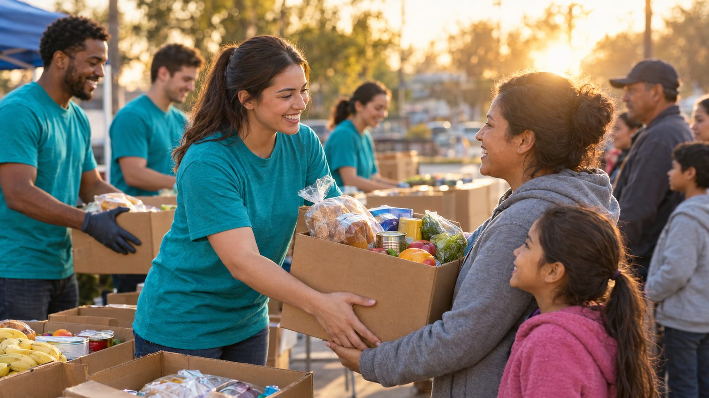

Our impact
Help that shows up, month after month
We don't parachute in and leave. Our teams work with local leaders to understand what each community actually needs, then we stay until the job is done — and long after.
"The food box arrives the first week of every month. My children eat well, and I can spend what little I earn on their school. That is what hope looks like."
— Um Karim, program beneficiary
In 2025 alone, our volunteers packed 34,000 food boxes, funded 210 student scholarships and supported 14 mobile clinic convoys.
Support this work